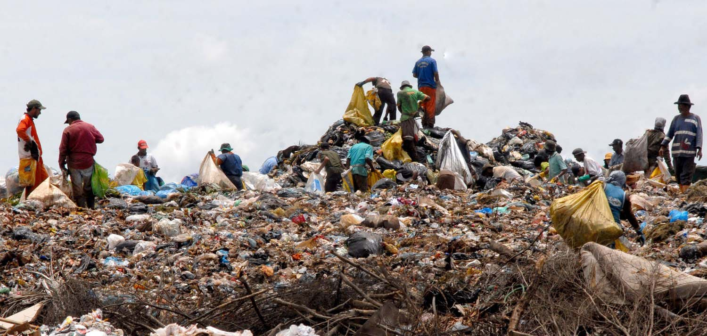

氣候變遷，跟你我有關 氣候變遷 對人類 帶來的 不只是災難頻傳 還有 土壤乾化 更直接的影響是 你我所需的糧食變少了 當有一天石油與電費比現在更昂貴 民生所需價格高漲 吃飽 ..... 也就不再是一件 也就不再是一件 隨時可達成的任務了 aaaaaaaaaaaaaaaaaaaaaaaaaaaaaaaaaaaaaaaaaaaaaaaaaaa

社工，是最美麗溫暖的一群人 可以為社會公益出一份力，是最驕傲又勇敢的件事 歡迎大家一 起來參與食物銀行的工作 我們長期需要志工來協助食物分配與運送的任務

腐敗的垃圾，去了哪裡？ 掩埋垃圾造成土壤酸化， 這嚴重影響了土地的可用性 酸化後的土壤種植出遭受汙染作物 而這些作物 汙染了你我的健康 更影響了世代 你我子孫的生命安全
我們做些什麼?
Food Bank 提供捐款平台，讓大家可以透過此平台改善飢餓問題並解決貧困，幫助弱勢族群，回饋社會

收集食物 不浪費任何資源

幫助弱勢偏鄉孩童 遠離飢餓

將募得資源 發送各地
食物銀行是一個社會慈善組織，收集來自全省各地量販店、中盤商、零售商、製造商、甚至個人捐贈的愛心物資， 也會搶救即將被丟棄的可食用物資，進行妥善的儲存與分類後，再將食物重新分配給最需要的人們手中。